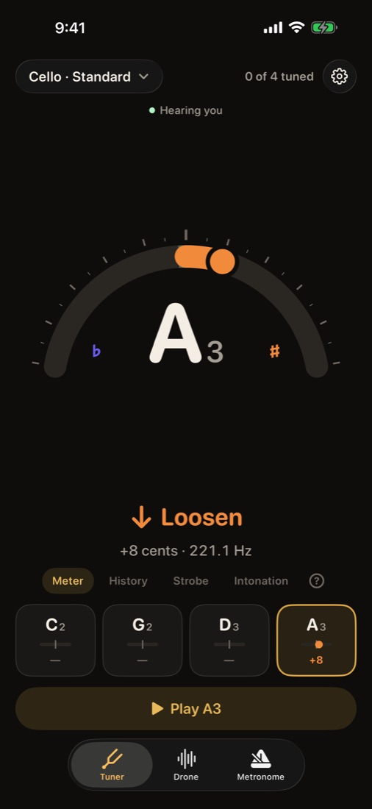
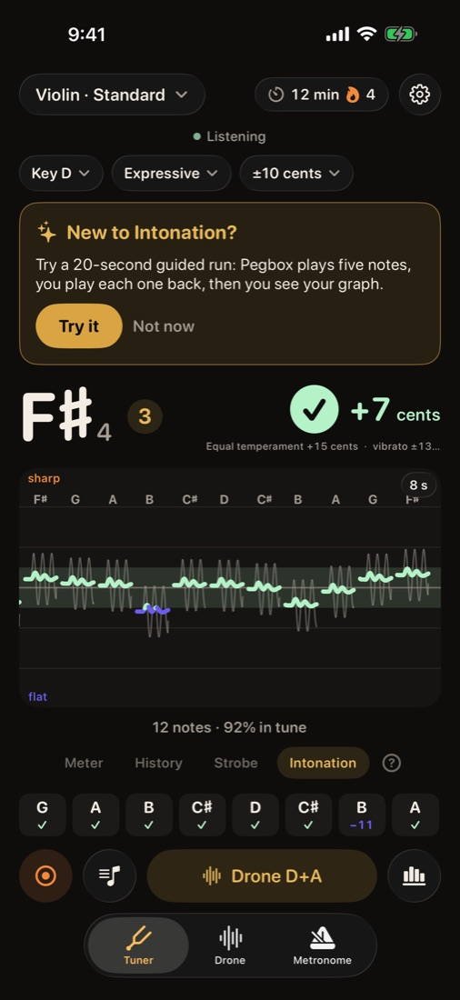
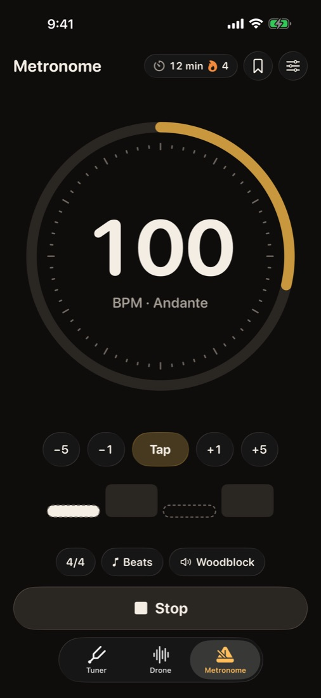

Public beta
Pegbox, a tuner for string players
A 616 Labs app
A tuner, drone and metronome for string players, with intonation practice built for how strings are really played.
For iPhone, iPad and Apple Watch. The beta runs in Apple's TestFlight app.



What Pegbox does
- Finds the string you play, even with other strings still ringing, on an arc meter, a scrolling history or a strobe.
- Plays any string's note until you stop it, and covers every common tuning, plus your own set-ups.
- Pure tuning for violin, viola, cello and double bass: fifths or fourths that ring without beating.
- Any reference pitch from 400 to 480 Hz, note names in English, German or solfège, and transposition for written parts.
- A drone and a metronome for practice, and intonation practice that marks each note in or out of tune.
- No ads and no account.
Pegbox support
Write to brian@616labs.net with questions, problems or ideas. Please say which device you use and which version of Pegbox (Settings, About).
To try Pegbox without an instrument, hum or whistle a steady note, or play a tone from another device.
If the meter does not move, check that Pegbox may use the microphone: Settings, Privacy & Security, Microphone.
Pegbox privacy
Pegbox listens through the microphone on your device to measure pitch. Audio never leaves your device, and Pegbox collects no data. Read the Pegbox privacy policy.